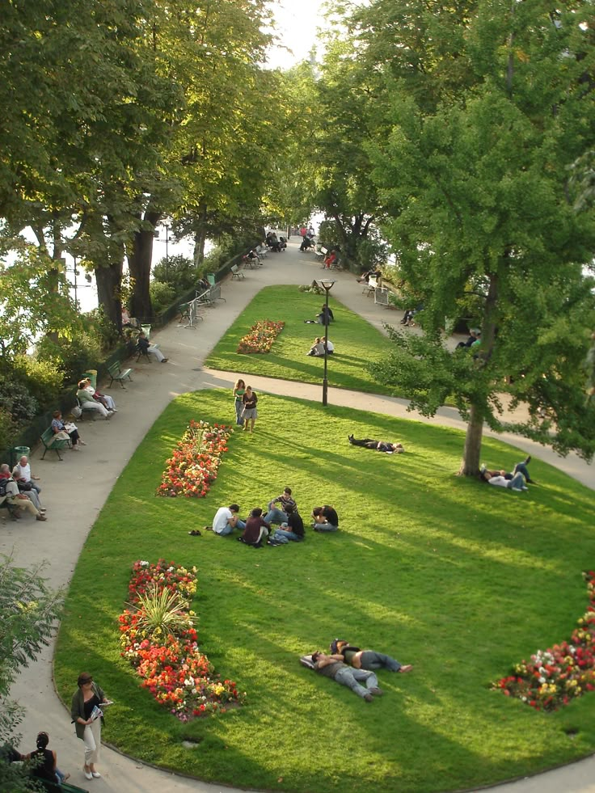
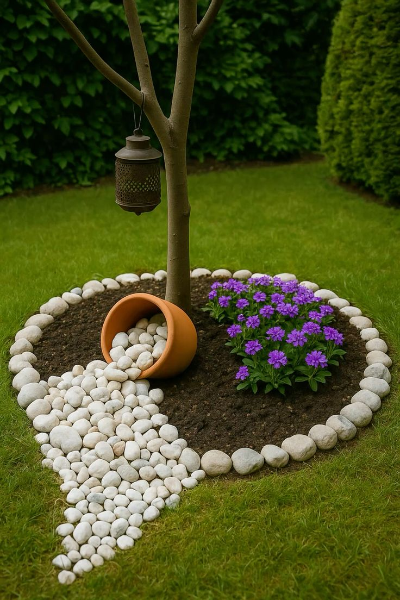
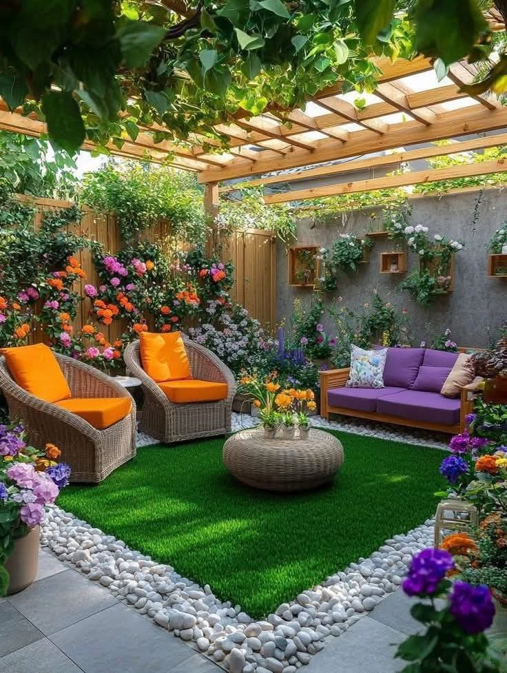

Portfolio
Jardinier
Qui suis-je ?
Je m'apelle Vincent D. et je suis jardinier chevronné passionné par la nature, avec 03 ans d'expériences dans la création et l'entretien des jardins,spécialiser en aménagement paysager. Mon approche, respecteuse de l'environnement et innovante, vise à trnasformer des espaces en havres de paix.
Eden Verdoyant
Le projet Edem Verdoyant etait une belle expérience. L'idée est de créer des espaces vert qui améliorent la qualité de vie urbaine.En travaillant dans la region de l'atlantique du Benin, j'ai pu replanter des arbres et établir des jardins communautaires. Ces actions ont favorisé la biodiversité tout en reduisant la pollution. Voir les habitants participer activement m'a rempli de joie et renforcé notre lien social. A la fin du projet, je ressens une immense satisfaction de voir nos villes se trnasformer en veritable havres de verdures.


Jardin Créateur
le projet jardin Créateur a été une experience enrichissante. En plus d'amenager le jardin de mon client, j'ai également dû dénicher une touche artistique, pour ne pas dire attrayante. je suis touchée par le resultatet mon coeur déborde de joie. Venez voir par vous même ! ce fut un beau defi que j'ai réussi avec succès.
Paradis Intime
J'ai concus ce jardin comme un havre secret, un cocon vivant pour deux jeunes mariés qui entament leurs voyage ensemble. je souhaitais créer un espace intime et coloré, où chaque fleur incarne la passion, la douceur et la promesse d'un amour en pleine eclosion. Le defi a été de générer une abondante verdure dans un espace limité, tout en préservant la lumière, l'harmonie et une circulation fluide. le mélange de textures bois, galet, gazon, rotin à nécessité précision et patience pour maintenir l'équilibre. Aujourd'hui, je percois plus qu'un simple jardin : c'est un petit paradis intime, concu pour leur silences, leurs rires et leurs rêves à deux.

Mes Aspirations
je suis paysagistes spécialisé dans l'aménagement des espaces verts.je consois, réalise et entretiens des jardins en harmonisant les plantes, ls matériaux et les volumes afin de créer des lieux à la fois esthétiques et fonctionnels. mon rôle ne se limite pas simplement à la plantation; je concois un espace vivant, adapté au climat, au terrain et au mode de vie des personnes qui l'occuperont. mon objectif est d'animer des espaces durables, d'apporter du bien-être et de travailler en harmonie avec la nature.